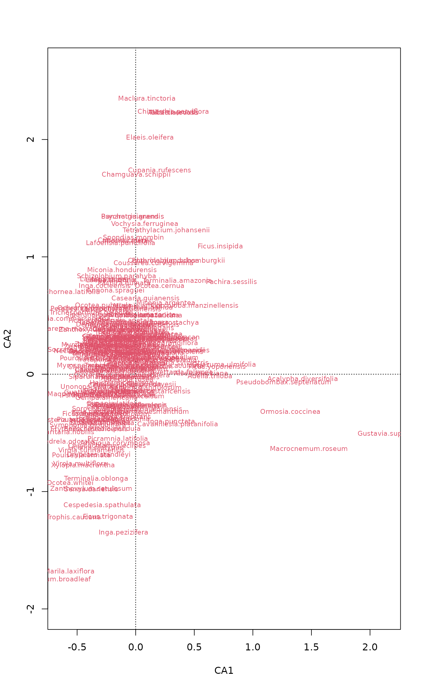
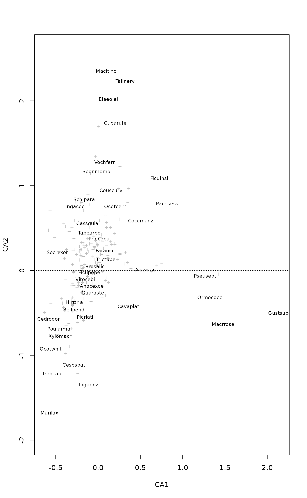
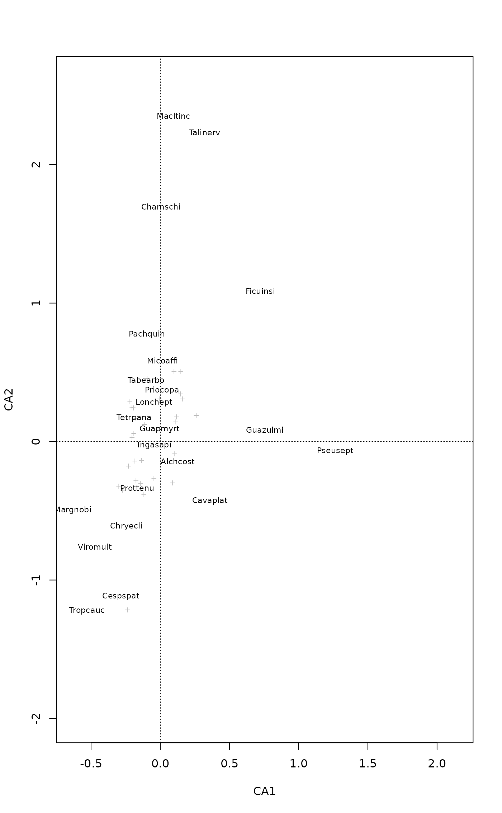

orditorp.RdThe function adds text or points to
ordination plots. Text will be used if this can be done without
overwriting other text labels, and points will be used otherwise. The
function can help in reducing clutter in ordination graphics, but
manual editing may still be necessary.
orditorp(x, display, labels, choices = c(1, 2), priority, select, cex = 0.7, pcex, col = par("col"), pcol, pch = par("pch"), air = 1, ...)
| x | A result object from ordination or an |
|---|---|
| display | Items to be displayed in the plot. Only one
alternative is allowed. Typically this is |
| labels | Optional text used for labels. Row names will be used if this is missing. |
| choices | Axes shown. |
| priority | Text will be used for items with higher priority if labels overlap. This should be vector of the same length as the number of items plotted. |
| select | Items to be displayed. This can either be a logical
vector which is |
| cex, pcex | Text and point sizes, see |
| col, pcol | Text and point colours, see |
| pch | Plotting character, see |
| air | Amount of empty space between text labels. Values <1 allow overlapping text. |
| ... | Other arguments to |
Function orditorp will add either text or points to an existing
plot. The items with high priority will be added first
and text will be used if this can be done without
overwriting previous labels,and points will be used
otherwise. If priority is missing, labels will be added from the
outskirts to the centre. Function orditorp can be used
with most ordination results, or plotting results from
ordiplot or ordination plot functions
(plot.cca, plot.decorana,
plot.metaMDS).
Arguments can be passed to the relevant scores method
for the ordination object (x) being drawn. See the relevant
scores help page for arguments that can be used.
The function returns invisibly a logical vector where TRUE
means that item was labelled with text and FALSE means that it
was marked with a point. The returned vector can be used as the
select argument in ordination text and points
functions.
# Now with orditorp and abbreviated species names cnam <- make.cepnames(names(BCI)) plot(mod, dis="sp", type="n")stems <- colSums(BCI) orditorp(mod, "sp", label = cnam, priority=stems, select = take, pch="+", pcol="grey")#> Warning: object '.Random.seed' not found# }